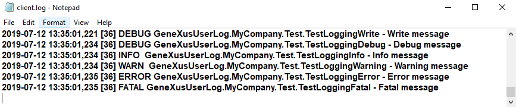

Log external object allows the developer to write messages in the log system in different levels, which will go to different streams.
PropertiesDoes not have any. MethodsAll of them allows the developer to indicate a "topic" value with the meaning of the data written. Write methodWrites a message in the log, and optionally you can indicate a topic and the desired log level.
Fatal methodWrites a fatal message in the log (through the errors flow channel).
Error methodWrites an error message in the log (through the errors flow channel).
Warning methodWrites a warning message in the log (through the warnings flow channel).
Info methodWrites an info message in the log (through the info flow channel).
Debug methodWrites a debug message in the log (through the debug flow channel).
EventsDoes not have any. DomainsLogLevel domainEnumerated domain with the available log levels. In order of significance:
ExampleSmart devicesSuppose you have the Default Log Level property set to "Warning", and the following code in a client-event:
Event 'Test'
Composite
Log.Debug(!"Debug message",!"MyCompany.Test.TestSDLoggingDebug")
Log.Info(!"Info message",!"MyCompany.Test.TestSDLoggingInfo")
Log.Warning(!"Warning message",!"MyCompany.Test.TestSDLoggingWarning")
Log.Error(!"Error message",!"MyCompany.Test.TestSDLoggingError")
EndComposite
Endevent
Then, in Android's LogCat, you will see the following messages (refer to HowTo: Enable logging for Smart Devices). Note that it only displays Warning and Error messages due to the Log Level property. Other messages are ignored (Debug and Info). Note: Remember that log messages will be displayed on LogCat/XCode in online applications only when the Log external object is executed on client-side events. In such case, The Start, Refresh and Load events will print the log depending on the server-side configuration (as it is shown in the example below).
WebSuppose you have the User Log level property set to "6.All" and Log output property to "File". Then, if you write an event like this:
Event 'Test'
Log.Write(!"Write message", !"MyCompany.Test.TestLoggingWrite",LogLEvel.DEBUG)
Log.Debug(!"Debug message",!"MyCompany.Test.TestLoggingDebug")
Log.Info(!"Info message",!"MyCompany.Test.TestLoggingInfo")
Log.Warning(!"Warning message",!"MyCompany.Test.TestLoggingWarning")
Log.Error(!"Error message",!"MyCompany.Test.TestLoggingError")
Log.Fatal(!"Fatal message",!"MyCompany.Test.TestLoggingFatal")
Endevent
In the client.log file you will see the following messages:  Notes
Scope
AvailabilityThis external object is available as of GeneXus 15 Upgrade 11 Best practicesWhen using Modules for sharing GeneXus's interfaces (e.g. an API), it is highly recommended to follow these guidelines.
See also
|